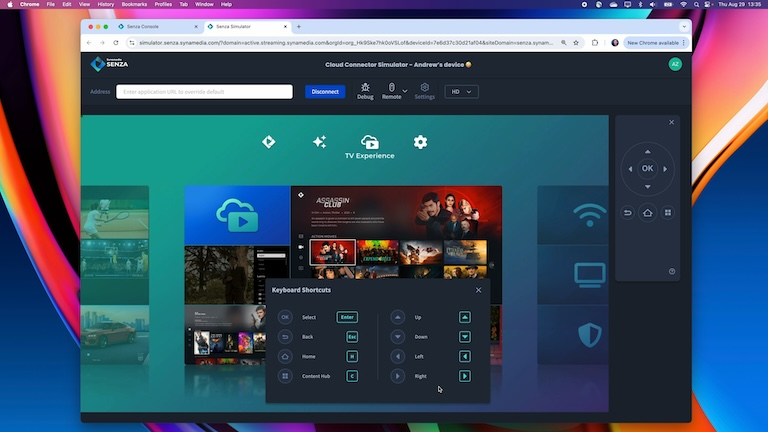
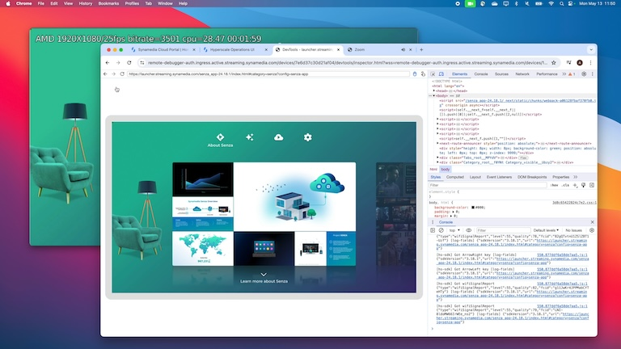
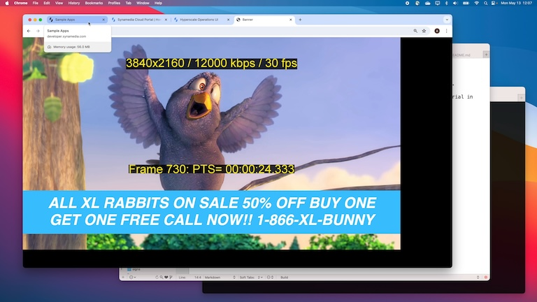

|  | Using the Device Simulator
This video tutorial shows how you can use the device simulator to preview how your app will run on a physical cloud connector device. |
|  | Using the Remote Debugger
This video tutorial shows how you can use the Remote Debugger to interact with your cloud connector device and debug your web app. You'll also learn how to use the debugger to run a sample app by changing the URL location. |
|  | Running a Sample App
This video tutorial shows how to run a sample app that lets you switch back and forth between playing video in the web app and streaming video directly to the device. We'll do a deep dive into the code to learn how it works. |